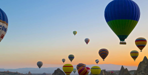
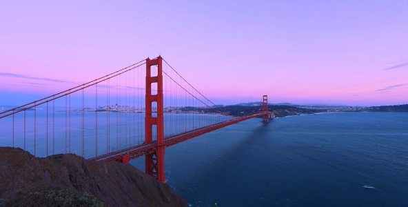
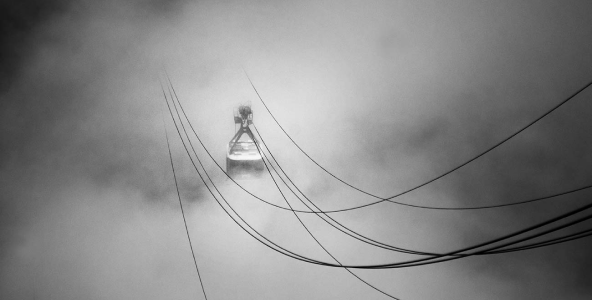

Let's do it together
We travel the world in search of stories. Come along for the ride.
Featured Posts
The Road Ahead
The road ahead might be paved - it might not be.
September 25, 2015
From Top Down
Once a year, go someplace you’ve never been before.
September 25, 2015
Most Recent

Still Standing Tall
Life begins at the end of your comfort zone.
September 25, 2015

Sunny Side Up
No place is ever as bad as they tell you it’s going to be.
September 25, 2015
 Water Falls
We travel not to escape life, but for life not to escape us.
Water Falls
We travel not to escape life, but for life not to escape us.
September 25, 2015
 Througt the Mist
Travel makes you see what a tiny place you occupy in the world.
Througt the Mist
Travel makes you see what a tiny place you occupy in the world.
September 25, 2015

Awaken Early
Not all those who wander are lost.
September 25, 2015
 Try it Always
The world is a book, and those who do not travel read only one page.
Try it Always
The world is a book, and those who do not travel read only one page.
September 25, 2015